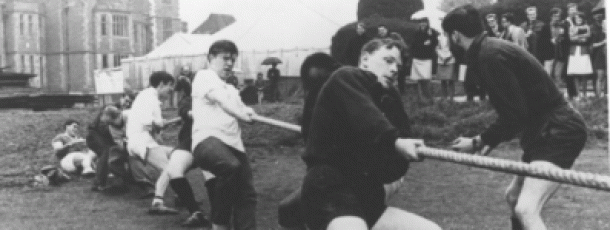

That Girl from Derwent dwells on the value of religion this Christmas.
That Girl from Derwent has learned a few more things about prejudice since moving up North.
That Girl From Derwent reckons if you're going to be offensive, you should find a better reason.
That Girl from Derwent considers why it is that some words have wider implications than others.
The other evening, amongst the more practical content of the university’s web site, I stumbled across pictures of the University of York as it appeared through the ages; the concrete panels pictured became a darker grey as the decades progressed, but otherwise it was remarkably similar to how it is now.
Don’t get me wrong, there were differences, but they were more to do with the people in the pictures and their datable fashions; the smart 1960’s Jackie Kennedy-style ladies formal suits, the lank male 1970’s hair, the 1980’s high-waisted jeans and terrible perms, all part of times past on campus.
Some of the pictures from the university pages are in settings you wouldn’t even think of any more, like those set amongst statues that were on loan and have been returned, or beneath the roof that used to crown the Vanbrugh-Goodricke bridge. Perhaps in future people will look back at our pictures, plundered from facebook albums, Vision and Nouse pages and Youtube video stills, with a similar sense of familiarity mixed with disorientation; that feeling of an enough being recognizable seem creepy, but enough being different to seem a world away.
Students admire a temporarily placed Henry Moore statue
In future, pictures will exist of us before some unforeseeable and campus-altering events have taken place. Perhaps a group of students in fifty years time, several years after central hall is demolished due to an infestation of giant gerbils, will look back at our Facebook snaps and think ‘wow… the education department building looks really new here, but what the hell is that spaceship thing?’.
I doubt many people in the 1960’s thought that the lake would contain toxic algae, especially as the album contains pictures of previous students windsurfing in front of Vanbrugh. Who knows what could happen in future that we don’t expect, or what pictures of now will surprise the future inhabitants of our decaying colleges.
Windsurfing on the lake outside Vanburgh, 1980s
With the number of cameras in the modern world and the number of albums on Facebook, ours will certainly be a generation immortalised in pictures; and some day some fresh university student will doubtlessly reflect on the pictures of us in our then dated boho-style dresses or converse footwear whilst thinking ‘I know that building… who knew it was that old?’.
Change can happen so quickly on some levels, yet so slowly on others. During the three short years I have been here, I have seen my own department demolished and its academics and their research moved to Vanbrugh’s newly converted office blocks, only for my departments prefabricated bungalow of a headquarters to be replaced with a shiny new education department. Yet the largest available areas within the sports centre are still housed in a tent that takes any extreme of temperature and doubles it’s negative effects.
 First York-Lancaster weekend Tug of War match. York won 2-0
As planned, soon much more will be replaced. The old Goodricke will be shifted to Heslington East, although in name only. The buildings themselves will stand as part of other colleges on the ‘old’ campus, and as Goodricke’s remains are divided between James, Wentworth and Vanbrugh it’s name will be firmly transplanted to the shiny new accommodation, built on an area of land that just a couple of years ago our own archaeology students were scrabbling around in and practicing their craft.
While the dying Goodricke already watches its few possessions doled out to it’s collegic brethren, the scaffold-encrusted bridges look on. If I were them, I would be grateful; the number of people who have wanted to save them simply because they are a ‘part of campus’ is staggering, and a testament to the motivational power of human sentiment. Our bridges are old dogs; decomposing, unpredictable, and practically unfit for purpose, but they’ve been such a feature of campus for so long that we loath to destroy them before we absolutely have to.
Vanburgh paradise looking idyllic
These pictures are particularly interesting right now, considering the construction of the Heslington East time capsule is currently taking place. These pictures are in some ways the same as the time capsule; frozen in time, unalterable, and yet their advantage over the capsule itself is that they are constantly and instantly accessible. The contents of a time capsule buried behind glass screens and html coding.
It was fascinating looking at pictures of our university through time. From the beginning of construction of main campus, through the revamping of the King’s Manor to various shots of sculptures loaned to the university over time, the anniversary pages on the university website are worth a glance, particularly as we begin a new leg of building work on Heslington East. The building of the new campus will undoubtedly be better documented than the development of the old, but change in anything important to us is of the greatest significance; it helps us understand and respect buildings, places, people, and organisations. It helps us to remember what made us, us.
York University's first Student newspaper


I'm fairly sure Eboracum wasn't student run
I'm fairly sure this proves it was.
http://www.york.ac.uk/admin/presspr/40thanniversary/1960s.htm
Ah, the source I saw (the University library) describe it as a Corporate Publication (as opposed to Nouse and Vision which are listed as Periodicals).
"The number of people who have wanted to save them [the bridges] simply because they are a ‘part of campus’ is staggering, and a testament to the motivational power of human sentiment"
A part of campus they certainly are; indeed the covered walkways are the key social mechanism of the whole design. But your statement is somewhat hypeberbolic - who has actually been proactive in trying to save these?
The only existing organised body of students that are pro-active are the hardcore members of the university's architecture society. It would be great if others would take a stand...
This is so cool.
"the 1980’s ... terrible perms"
Hey! What's your point?!
Chris, would the Yorker count as a Corporate Publication?
'The dying Goodricke'... Oi!... We've actually received something of a upgrade... And we took everything that wasn't nailed down  ....
....
You must log in to submit a comment.
{kind=link}
{kind=link}
{kind=link}
{kind=link}
{kind=link}
{kind=link}
{kind=link}